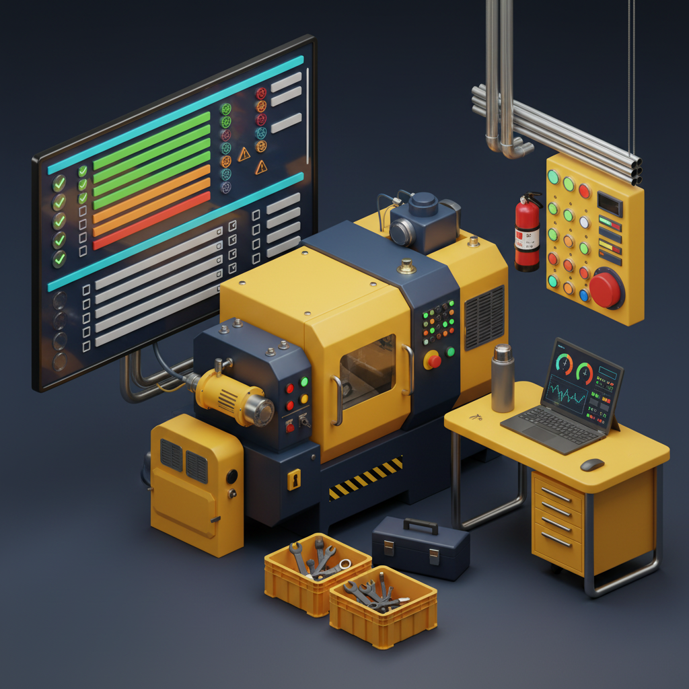
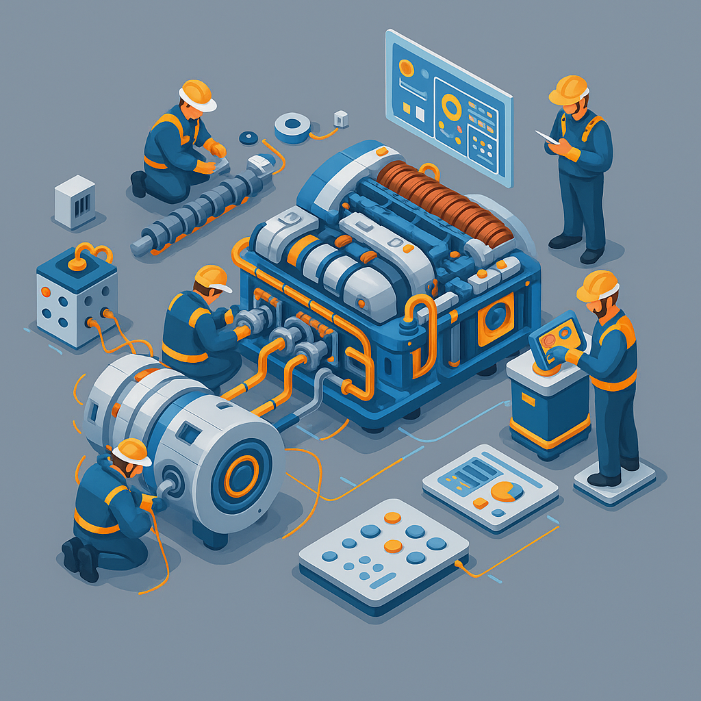
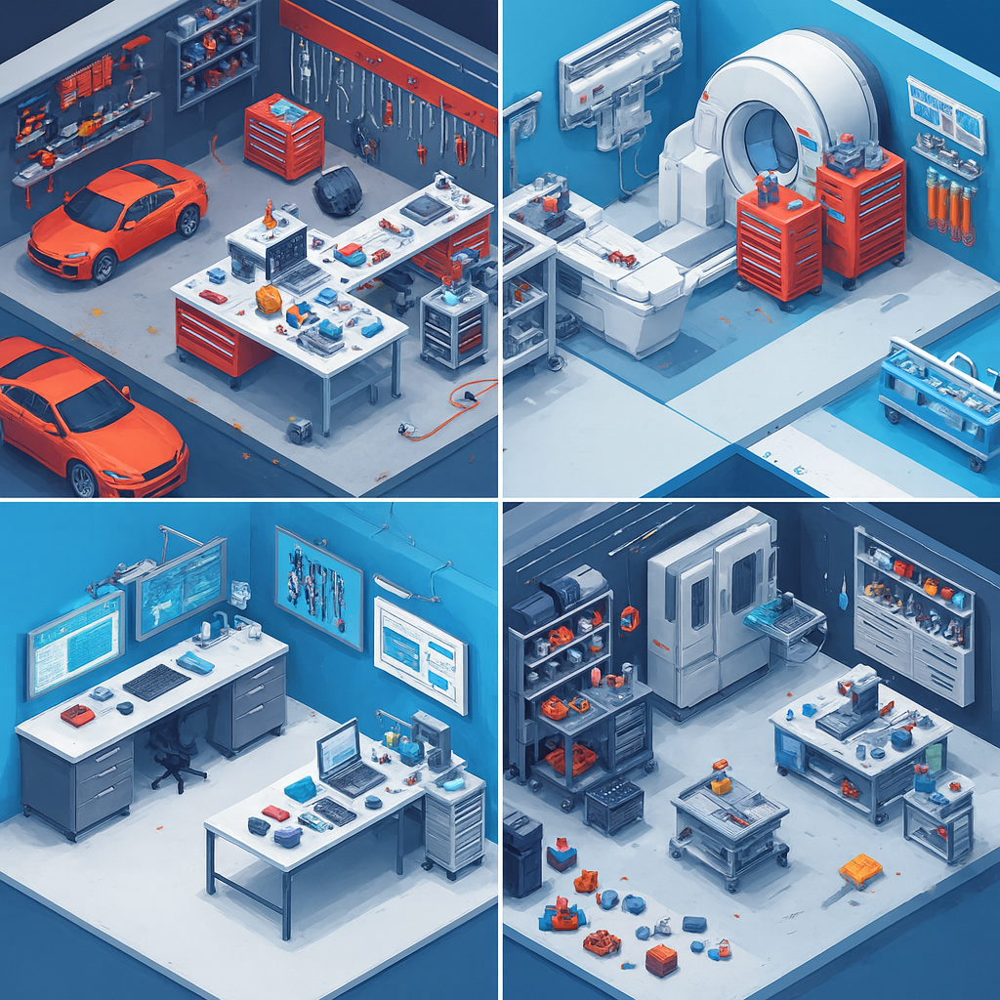

Sapphire Core Suite
Command Center
Workplace Management
Still finding out what's happening at your other locations through a phone call, a forwarded message, and someone's best guess?
Three locations or thirty, Workplace Management puts you inside all of them at once. Switch, act, decide. No relays, no lag, no playing telephone with your own business.
Scheduling
Work Shifts
Set your branch's working window first, then build shifts freely. No worker ever ends up with clashing hours.
- Shifts scoped within branch hours
- Worker hour conflicts auto-blocked
- Each branch manages shifts locally
Instant Switch
Navigate
Own multiple branches? Step into any of them virtually and inspect, monitor and take action as if you were physically there.
- All branches under one owner account
- One click to switch between branches
- Full management control in any branch
Real-Time
Analytics
Every branch keeps its own live analytics. Switch freely and act on data from any location you own.
- Live analytics local to each branch
- Switch branches to view their data
- No cross-branch data mixing
Workforce Hub
User Management
Still not sure who has access to what — and quietly hoping nobody's doing something they shouldn't be?
Every employee. Every role. Every permission. One place to control who gets in, what they can touch, and what they've been up to — without a spreadsheet, a group chat, or an IT ticket for every change.
Core Module
People
Build complete employee profiles, map each person within the organizational hierarchy, and maintain their full document history from joining contracts to exit paperwork.
- Complete profiles with ID records
- Department tags build the org tree
- Full document trail per employee
Security
Access Control
Define precisely what each employee can see and do across every inventory. Roles, a granular permission matrix, and login access all governed from one place.
- Role assigned per inventory
- Granular per-action permissions set
- Login blocked or restored instantly
Monitoring
Activity Tracking
Get a live picture of your entire workforce at any moment. Headcount by status, role distribution, permission spread, and joinee trends always current.
- Real-time headcount by status
- Role and permission stats tracked
- Joinee and exit trends in view
Why do I need this?
See real-world use cases, industry fits & ROI breakdown →
Listed
Master Data Management
Still running the business on scattered spreadsheets, duplicate entries, and three different versions of the same truth?
Master Data Management keeps every core definition in one place, so workflows, reports, and decisions stay clean everywhere the system runs.
Inventories
- Reserve, distributable and active types
- Grouped under named categories
- No classification overlap
Locations Matrix
- Five levels, building down to shelf
- Fully customizable, unlimited locations
- Your facility mapped exactly as it exists
Units
- Full SI unit library built in
- Custom units tied to SI base values
- Weight, volume, length and count
Tax Management
- Custom named tax categories and slabs
- Multiple rates per tax type supported
- No external API dependency to comply
Fuel Types
- Material and electric types classified
- Grade level detail per fuel type
- Every powertrain type covered
Brands & OEMs
- One approved master brand list
- Duplicate entries blocked at source
- Every item tied to a verified brand
Departments
- One standardized list across the org
- Consistent across all levels
- No mismatched department entries
Designations
- All designations defined org-wide
- Uniform across all employee profiles
- No mismatched title variations
Holiday Calendar
- Weekly offs and date ranges defined
- Monthly and yearly repeats supported
- All scheduling scenarios handled
Complete Visibility
Inventory Management
Still guessing what's on the shelf, who has that tool, or why the last job ran out of parts?
Three types of inventory. One system that knows where everything is, who has it, and what happens to it next — from the shelf to the floor and back again.

Storage
Reserve
Items held off the floor, tracked through aging, readiness and maintenance at every stage.
- Full lifecycle tracked
- Aging and readiness always in view
- Maintenance history kept on record
Assignment
Distributable
Tools and equipment assigned to people or workstations, with every handover on record.
- Permanent assignment
- Complete tracking
- Return and handover tracking

Operations
Active
Requested, consumed and dispensed on demand, with every movement logged against a complete trail.
- Request, consume and dispense
- Every movement logged in real time
- Complete trail till consumption
Smart Approvals
Request Handling
Still approving asset requests over WhatsApp, verbal confirmations, and a prayer that someone follows up?
Every request — whether it's issuing a tool, returning equipment, or moving an asset across locations — goes through a structured flow. Logged, routed, approved, and done. No more chasing someone for a yes.
In & Out
Issue & Return
Request, approve, and move items in both directions. Role-based routing, multi-level approvals, and a full audit trail on every transaction.
- Multi-level approval workflows
- Condition and quantity check on return
- Inventory updated on every move
Transfer
Location Change
Move items across locations with a verified chain of custody. Every handoff logged, every request recorded, full movement history maintained.
- Source to destination handoff logged
- Every transfer verified
- Complete movement history per item
De-assign
Surrender
De-assign and collect items with reason codes, condition records, and permanent documentation — built for exits, audits, and tool collections.
- Reason codes on every de-assignment
- Exits and tool returns in one flow
- Records always audit-ready
Inspection & Reporting
Smart Inspections
Structured assessments with audit trails
Still doing inspections on paper forms that live in a drawer — until someone asks for them and nobody can find them?
Inspections that actually happen on time, get scored consistently, and leave a trail that holds up under scrutiny. No clipboards, no missing forms, no"we'll check next week."
Automated
Scheduled Inspections
Set daily, weekly, monthly, or fully custom cycles — tasks generate on their own, schedules stay conflict-free, and no inspection window goes unaccounted for.
- Custom cycles, zero scheduling conflicts
- Tasks auto-generated per cycle
- Alerts sent before every deadline
Structured
Objective Checkpoints
Define condition categories, damage rules, and scoring criteria once — every inspector works from the same framework, every result measurable and directly comparable.
- Set damage rules per condition type
- Scoring removes subjective judgment
- Uniform standards across all items
Paperless
Digital Documentation
Capture photos, notes, and signatures in the field. Every record is searchable, exportable, and compliance-ready — no paper trail to chase, no gaps to explain.
- Remarks and findings recorded on-site
- Searchable inspection records
- Export ready logs for audits
Report Resolution
Smart Resolution
Report Resolution
Found a problem during inspection — and then watched it sit in a report for three weeks while nobody decided what to do with it?
An inspection finding without a resolution is just a documented problem. Report Resolution closes the loop — repair it, replace it, or discard it — with every cost, every invoice, and every decision on record.

Restore
Repair
Log repair details with service provider, parts used, labor costs, and completion timeline. Track warranty status and repair history for each asset.
- Provider, parts & labour logged
- Warranty tracked per asset
- Full repair history & total cost
Replace
Replacement
Document replacement with new asset linkage, disposal of old asset, procurement costs, and depreciation adjustments. Maintain complete replacement chain.
- Old & new unit on one record
- Procurement & disposal costs saved
- Depreciation reset from swap date
Dispose
Discard
Record disposal with reason codes, salvage value, disposal method, and authorization. Calculate final lifecycle cost and close asset record properly.
- Reasons & salvage value documented
- Sign-off required before closing
- No ghost assets left open
Service & Maintenance
Smart Maintenance
Service & Maintenance
Still finding out a service was overdue only after something breaks — and then spending an hour hunting for who did the last one?
Service & Maintenance keeps every asset on schedule, every service event on record, and every cost accounted for — before the breakdown, not after. Contracts, warranties, and insurance included.
Scheduled
Maintenance Cycles
Define service intervals by exact date patterns. 3rd of every month, 5th of every quarter, or any week-based cycle. Adjust frequency anytime the asset demands it.
- Day and week patterns per asset
- Monthly and quarterly cycles supported
- Edit cycles without losing history

Documentation
Maintenance Event Logging
Every service event recorded in full, scheduled or unplanned. Costs, invoices, spare parts, and supporting documents all attached directly to the asset record.
- Scheduled and off-schedule both logged
- Attach invoices and documnets
- Full cost breakdown per service event
Protected
Coverage & Benefits
Link AMC, insurance, warranty, and extended coverage to each asset. Log benefits redeemed per service event and see what each contract has actually recovered.
- AMC, insurance and warranty linked
- Benefits redeemed logged per event
- Spend vs recovery tracked year on year
Auto-Generated
Maintenance Sheet
Every cycle, every invoice, every benefit redeemed is compiled automatically into a per-asset maintenance sheet. Scheduled or off-schedule, covered or out-of-pocket, the full picture stays readable across every year.
- Auto-generated per asset, zero effort
- All events in one consolidated view
- Annual spend vs recovery per asset
The sheet also preserves the financial and service evidence behind each maintenance event, so Rajneesh can review benefits, invoices, and repair history without reconstructing the asset story from scattered records.
- All benefits recorded
- Invoices attached
- Chronological damage and repair summary
Personal Portal
Workstation
Does your team actually know what's assigned to them — or does that conversation only happen when something goes missing?
Every employee gets their own view — tools, workstation items, vehicles, materials — everything assigned to them, everything they're responsible for, in one place. They act from their end. You see it all from yours.
Personal
Toolbox
Permanently issued tools with ownership properly defined. Self-inspections, damage reports, and repair requests handled directly by the employee. Accountability starts at the individual level.
- Self-inspection and damage reporting
- Repair requests raised by the employee
- Condition history tracked per tool

Assigned
Workstation Items
Every item at a workstation tied to the person, role, location, and shift. Usage logged, consumables requested, and records maintained without going through anyone else.
- Items mapped to role, location and shift
- Usage logged and consumables tracked
- Requests raised directly from workstation
Fleet
Issued Vehicles
Vehicle assigned, mileage logged, fuel recorded and trip details captured. Return checklist completed before the keys go back. Every handover clean and on record.
- Mileage, fuel and trip logs per driver
- Return checklist before every handover
- Complete trip history per assignment
Materials
Blends
Issued materials and dispensed quantities tracked with batch and lot numbers. Consumption recorded, refills requested, and every unit accounted for from the employee's own portal.
- Batch and lot numbers tracked per issue
- Consumption logged against the employee
- Refill requests raised from the portal
Live
Smart Dashboard
One screen shows every assigned asset, pending task, upcoming inspection, and open request — synced live with the central system. The employee always knows what is on their plate.
- All assigned assets in one view
- Pending tasks and open requests live
- Upcoming inspections flagged on time
Managers and higher authorities track activity, responsiveness, and completion rates across the entire workforce. Performance is visible at both ends without a separate reporting tool.
- Employee self-performance tracking
- Manager-level activity visibility
- Synced live with the central system